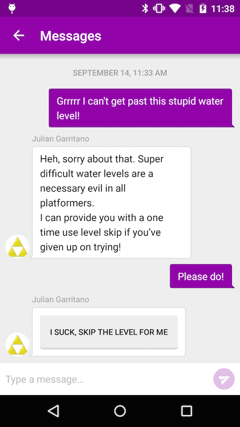
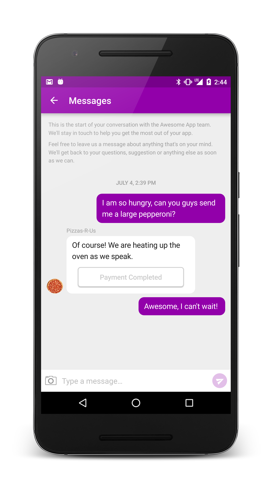
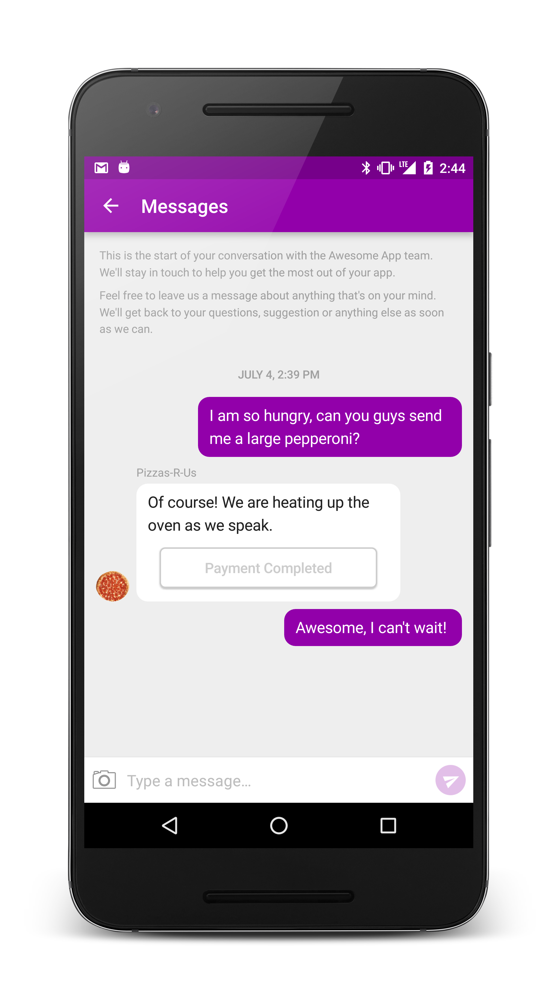

Welcome
Smooch lets you have rich conversations with your users, right in your app or on your website. If you want to learn more about Smooch, then visit our website at http://smooch.io or sign up here. This page provides in-depth documentation on Smooch’s features and is meant to be a guide for developers integrating the SDK and app makers seeking to engage with their users.
Source code examples are provided for all of our SDKs, including both Objective-C and Swift for iOS. You can view code examples inline, and you can switch the programming language of the examples with the tabs in the top left.
If you have any other questions, feel free to reach out to us here.
References
For more in-depth details on Smooch’s APIs check out our API Reference documentation. The API reference documents every method and property available through Smooch.
Upgrading to Smooch
Upgrading the SDKs to Smooch requires some changes to your existing code. These changes are documented in our upgrade guides:
Adding Smooch to your app
There are a few ways you can include the Smooch plugin on your Android project.
The Smooch library comes in both the AAR and JAR packages. The AAR package is the preferred one but if you are not using Android Studio, you will need to install the JAR. The current supported compiledSdkVersion must be at least 21.
Android Studio with Gradle

The Smooch library is hosted on Bintray and is available on JCenter.
Setup JCenter as a repository.
repositories {
jcenter()
}
Add the dependencies right into your build.gradle file.
compile 'com.google.android.gms:play-services-gcm:7.5.0'
compile 'com.google.code.gson:gson:2.3.1'
compile 'com.squareup.okhttp:okhttp:2.4.0'
compile 'io.smooch:core:latest.release'
compile 'io.smooch:ui:latest.release'
Sync the Gradle project then add the necessary code to initialize Smooch in your app.
Eclipse, Netbeans and the ant build system
Core and UI modules
On Eclipse, we need to retrieve our eclipse package to add Smooch and our dependencies to your project. Also, we will need to manually add permissions and services to the manifest.
- Download the
smooch-eclipse-x.x.x.zipfile from Bintray. The package is located inFiles/ui/x.x.x/smooch-eclipse-x.x.x.zip. - Extract the zip and copy the
appcompatandsmoochfolders to the root of your project.

In Eclipse, import both folders in your workspace as
Existing Android Code. After this step you should have two new projects added to your workspace namedandroid-support-v7-appcompatandConversationActivity.Expand the
android-support-v7-appcompat\libsfolder. Then on every library, right click on them andBuild Path>Add to Build Path.

Go to the properties of your project (i.e.
right-click>Properties). Then under the Android item, add a reference to the Smooch’sConversationActivity.Add these permissions in AndroidManifest.xml:
<uses-permission android:name="android.permission.ACCESS_NETWORK_STATE"/>
<uses-permission android:name="android.permission.INTERNET"/>
<uses-permission android:name="com.google.android.c2dm.permission.RECEIVE"/>
- Add these services in AndroidManifest.xml:
<service android:name="io.smooch.core.service.SmoochService"/>
<service android:name="io.smooch.core.GcmInstanceIDListenerService" android:exported="false">
<intent-filter>
<action android:name="com.google.android.gms.iid.InstanceID"/>
</intent-filter>
</service>
<service android:name="io.smooch.core.GcmRegistrationIntentService" android:exported="false"/>
<service android:name="io.smooch.core.GcmService" android:exported="false">
<intent-filter>
<action android:name="com.google.android.c2dm.intent.RECEIVE"/>
</intent-filter>
</service>
<receiver
android:name="io.smooch.ui.notification.NotificationReceiver"
android:exported="false">
<intent-filter>
<action android:name="io.smooch.NOTIFICATION"/>
</intent-filter>
</receiver>
- Add this activity in AndroidManifest.xml:
<activity android:name="io.smooch.ui.ConversationActivity" android:theme="@style/Theme.Smooch" />
- Follow these instructions to install the Google Play Services to your project.
Clean and build your project then add the necessary code to initialize Smooch in your app.
Core module only
If you are planning on building your own UI and only use our API, you can integrate the core module only.
- In your project directory, create a subdirectory called libs if it does not already exist
- Copy Smooch-core.jar into the libs directory
- Add these permissions in AndroidManifest.xml:
<uses-permission android:name="android.permission.ACCESS_NETWORK_STATE"/>
<uses-permission android:name="android.permission.INTERNET"/>
<uses-permission android:name="com.google.android.c2dm.permission.RECEIVE"/>
- Add these services in AndroidManifest.xml:
<service android:name="io.smooch.core.service.SmoochService"/>
<service android:name="io.smooch.core.GcmInstanceIDListenerService" android:exported="false">
<intent-filter>
<action android:name="com.google.android.gms.iid.InstanceID"/>
</intent-filter>
</service>
<service android:name="io.smooch.core.GcmRegistrationIntentService" android:exported="false"/>
<service android:name="io.smooch.core.GcmService" android:exported="false">
<intent-filter>
<action android:name="com.google.android.c2dm.intent.RECEIVE"/>
</intent-filter>
</service>
Download and copy each dependency JAR into the libs subdirectory:
Follow these instructions to install the Google Play Services to your project.
Troubleshooting
If you get the following error when running your application
[2015-07-23 09:33:42 - Dex Loader] Unable to execute dex: Multiple dex files define Lio/smooch/ui/BuildConfig;
[2015-07-23 09:33:42 - MainActivity] Conversion to Dalvik format failed: Unable to execute dex: Multiple dex files define Lio/smooch/ui/BuildConfig;
The fix is:
- Eclipse project properties >
Java build path>Order and export - Uncheck Android private libraries.
See http://stackoverflow.com/a/26856255/213272.
Initialize Smooch in your app
After following the steps above, your app is setup for working with the Smooch SDK. Before your code can invoke its functionality, you’ll have to initialize the library using your app’s token.
This token is free and uniquely identifies your app and links it to the Smooch backend that does the heavy lifting necessary to bridge the gap between you and your users.
You can find your token by logging into Smooch and copying it from the settings page as shown below.

Once you’ve located your token, use the code below to initialize Smooch.
Add the following line of code to your onCreate method on your Application class:
Smooch.init(this, "YOUR_APP_TOKEN");
If you don’t have an Application class, we recommend that you create one to make sure Smooch is always initialized properly. If you don’t have one, you can copy the following and save it to your application package.
package your.package;
import android.app.Application;
import io.smooch.core.Smooch;
public class YourApplication extends Application {
@Override
public void onCreate() {
super.onCreate();
Smooch.init(this, "YOUR_APP_TOKEN");
}
}
You also need to declare your newly created Application class in the <application> tag in your AndroidManifest.
<application
android:name="your.package.YourApplication">
...
</application>
Displaying the Smooch User Interface
Once you’ve initialized Smooch, you’re ready to try it out.
Find a suitable place in your app’s interface to invoke Smooch and use the code below to display the Smooch user interface. You can bring up Smooch whenever you think that your user will need access to help or a communication channel to contact you.
ConversationActivity.show(this);
You should also take the time to configure the push notifications setup.
Configuring push notifications
Push notifications are a great, unobtrusive way to let your users know that a reply to their message has arrived.
Step 1. Generate a GCM configuration file for your Android project
Go to Google’s cloud messaging documentation
Click on
GET A CONFIGURATION FILE(you will be prompted to sign in to your Google account if you are not already signed in)Follow the steps to generate your configuration file (for your package name, copy and paste the package used in your application’s AndroidManifest.xml file)
Enable Google Cloud Messaging to your Android project
At the end of the page, continue to Generate configuration files
Take note of the Server API Key and the Sender ID, we will need those in the second step
Download the
google-services.jsonfile generated by the tool and save the file at the root of your Android application
Step 2. Configure push notifications in Smooch
Go to https://app.smooch.io and log into your account.
Go to Settings > Android
Enter your Server API Key and Sender ID (which was retrieved earlier in Step 1)
Step 3. Configure Android application to accept push
Add the dependency to your project’s top-level
build.gradle:classpath 'com.google.gms:google-services:1.3.0-beta1'Add the plugin to your app-level
build.gradle:apply plugin: 'com.google.gms.google-services'Add the following permissions and uses-permissions to your
AndroidManifest.xmlfile (typically before the opening<application>tag):<permission android:name="<your_application_package>.permission.C2D_MESSAGE" android:protectionLevel="signature"/> <uses-permission android:name="android.permission.WAKE_LOCK"/> <uses-permission android:name="<your_application_package>.permission.C2D_MESSAGE"/>Add the following receiver to your
AndroidManifest.xmlfile before the closing</application>tag:<receiver android:name="com.google.android.gms.gcm.GcmReceiver" android:exported="true" android:permission="com.google.android.c2dm.permission.SEND"> <intent-filter> <action android:name="com.google.android.c2dm.intent.RECEIVE"/> <category android:name="<your_application_package>"/> </intent-filter> <intent-filter> <action android:name="com.google.android.c2dm.intent.REGISTRATION"/> </intent-filter> </receiver>
Step 4. Test it out!
Kill and restart your app.
Launch Smooch.
Send a message.
Press the home button or navigate away from the conversation.
Reply to the message from your choice of Smooch integrated service
You’ll receive a notification on the phone!
Configuring agent images
You can set an app maker’s image in your app (as pictured below) by creating a Gravatar image associated with the app maker’s email address.

Users
User data
Smooch allows you to specify profile information about your users so that you can better understand the context around a user’s message.
Smooch.init({
appToken: 'your_app_token',
givenName: 'Doctor',
surname: 'Who?',
email: 'the-doctor@smooch.io',
properties: {
'customProp': 'whatever you please'
}
});
Naming the current user
Once you set the user’s name it will be persisted by Smooch so any future message from this user contain the value you provided. If the user’s information changes, simply call the method a second time and the new information will overwrite it.
#import <Smooch/Smooch.h>
[SKTUser currentUser].firstName = @"Doctor";
[SKTUser currentUser].lastName = @"Who";
#import <Smooch/Smooch.h>
SKTUser.currentUser().firstName = "Doctor"
SKTUser.currentUser().lastName = "Who"
import io.smooch.core.User;
User.getCurrentUser().setFirstName("Artour");
User.getCurrentUser().setLastName("Babaev");
Smooch.updateUser({
givenName: 'Doctor',
surname: 'Who'
})
Getting the avatar of the current user
Setting the user’s e-mail lets you see their gravatar in the e-mail conversation. The user will not see their own gravatar in the chat.
#import <Smooch/Smooch.h>
[SKTUser currentUser].email = @"bob@example.com";
#import <Smooch/Smooch.h>
SKTUser.currentUser().email = "bob@example.com"
import io.smooch.core.User;
User.getCurrentUser().setEmail("2ez@4rtz.com");
Smooch.updateUser({
email: 'the-doctor@smooch.io'
})
Setting the signed up date
Setting the user’s signed up date allows Whispers based on that date to be sent to the right people. If not set, we’ll default to the first time Smooch sees the user, which is the moment the init call is made for the first time for a given user. It’s best to set it yourself to avoid sending a welcome message to users that in fact signed up a long while ago.
#import <Smooch/Smooch.h>
[SKTUser currentUser].signedUpAt = [NSDate date];
#import <Smooch/Smooch.h>
SKTUser.currentUser().signedUpAt = NSDate()
import io.smooch.core.User;
User.getCurrentUser().setSignedUpAt(new Date(1420070400000l));
Smooch.updateUser({
signedUpAt: new Date("Nov 6, 2013")
})
Adding custom profile information
You can also specify any other kind of profile information that will be sent along when users contact you. You can also use any properties you store using this API to send targeted messages to your users proactively using our Whispers feature.
#import <Smooch/Smooch.h>
[[SKTUser currentUser] addProperties:@{ @"nickname" : @"Lil Big Daddy Slim", @"weight" : @650, @"premiumUser" : @YES }];
#import <Smooch/Smooch.h>
SKTUser.currentUser().addProperties([ "nickname" : "Lil Big Daddy Slim", "weight" : 650, "premiumUser" : true ])
import io.smooch.core.User;
final Map<String, Object> customProperties = new HashMap<>();
customProperties.put("customDate", new Date());
customProperties.put("customFlag", true);
customProperties.put("customDigit", 322);
User.getCurrentUser().addProperties(customProperties);
You can grab the current user with User.getCurrentUser then set basic information with setFirstName, setLastName, setEmail and setSignedUpAt. You can also set your own custom properties by sending a map into addProperties.
Sensitive user data
Smooch sends messages using standard encryption protocols, but in order to keep your users completely safe, the best way is to inform your users they should never send sensitive data through Smooch messages, for example: credit card numbers, passwords, sensitive documents, and private photos.
Smooch allows you to identify new users on the fly, engage with them in a single conversation thread across multiple devices, and associate user and device profile information so that you can better understand the context of a user’s message.
Users on multiple devices
You may have users using your app on multiple devices. For example, suppose they have your app installed on both their iPhone and their iPad. You might also have Smooch integrated in both your mobile app as well as on your web site.
If you want the user to see the same conversation across devices you can do so by assigning your users a userId. This will link a user across all devices and platforms that have integrated with your Smooch app. Specifying a userId also facilitates user authentication.
The userId is a string that can be an email, GUID, or an existing ID from your own user directory. The userId must be unique within a given Smooch app, and it will only link devices within a single Smooch app.
After Smooch has been initialized, you can set the userId using the login API:
[Smooch login:yourUserId jwt:nil];
Smooch.login(yourUserId, jwt:nil)
Smooch.login(yourUserId);
Smooch.login(yourUserId, null);
In most use cases Smooch is initialized synchronously as your app loads. For this reason, once you’ve set your user’s userId for the first time it is recommended that you store that userId locally on the device so that it does not need to be fetched again the next time the user opens the app. If your app knows the userId at app boot time, instead of calling login you can specify the userId during Smooch initialization like so:
SKTSettings* settings = [SKTSettings settingsWithAppToken:@"YOUR_APP_TOKEN"];
settings.userId = yourUserId;
[Smooch initWithSettings:settings];
var settings = SKTSettings(appToken: "YOUR_APP_TOKEN")
settings.userId = yourUserId
Smooch.initWithSettings(settings)
Smooch.init({
appToken: 'YOUR_APP_TOKEN',
userId: yourUserId
});
Settings settings = new Settings("YOUR_APP_TOKEN");
settings.setUserId(yourUserId);
Smooch.init(this, settings);
Omitting the userId
Smooch will work perfectly fine without a userId. Profile information can still be included but the user will only be able to access the conversation from the device they’re currently using. This means that even if you specify the same profile information, if the same individual opens Smooch on a new device, or runs your web app in an incognito browser session, they will see a newly created empty conversation when they open Smooch. Only the userId can be used to synchronize a conversation across devices.
A userId can also be omitted at first and added at a later time. If you deploy an update to your app that assigns an existing user with a new userId that they didn’t have before, any existing conversation history they have will be preserved and their messages will start being synchronized across all devices where that userId is being used. This is particularly useful if a user opens Smooch and starts a conversation before having logged in to your app.
Switching users
If your app allows a shared device to switch between multiple user identities you can call the login API multiple times to switch between different userIds.
Logging out
Your app may have a logout function which brings users back to a login screen. In this case you would want to revert Smooch to a pre-login state. You can do this by calling the logout API.
Calling logout will disconnect your user from any userId they were previously logged in with and it will remove any conversation history stored on the device. Logging out will not disable Smooch. While logged out, the user is free to start a new conversation but they will show up as if userId was omitted during Smooch initialization.
[Smooch logout];
Smooch.logout()
Smooch.logout();
Smooch.logout();
Authenticating users (optional)
Provided you’re assigning userIds to your users, you can authenticate users to Smooch by issuing signed JSON web token (JWT) credentials. This option requires your app to be connected to your own secure web service, or to a 3rd party equivalent such as parse.com. There are JWT libraries available supporting a wide variety of popular languages and platforms.
To issue JWTs:
Generate a secret key for your Smooch app. You can do this from the Smooch dashboard under the Settings tab.

Implement server side code to sign new JWTs using the key ID and secret provided. The JWT header must specify the key ID (
kid). The JWT payload must include ascopeclaim of ‘appUser’ and auserIdclaim which you’ve assigned to the app user.A node.js sample is provided below:
var jwt = require('jsonwebtoken'); var KEY_ID = '55e9f9bf7a0ce5ca2d429c17'; var SECRET = 'BFJJ88naxc5PZNAMU9KpBNTR'; var signJwt = function(userId) { return jwt.sign({ scope: 'appUser', userId: userId }, SECRET, { headers: { alg: 'HS256', typ: 'JWT', kid: KEY_ID } }); }Issue a JWT for each user. You should tie-in the generation and delivery of this JWT with any existing user login process used by your app.
Specify the JWT when calling
loginon the client:[Smooch login:yourUserId jwt:yourJwt];Smooch.login(yourUserId, jwt:yourJwt)Smooch.login(yourUserId, yourJwt);Smooch.login(yourUserId, yourJwt);
Securing a userId happens automatically by using a JWT for the first time. Once a JWT is used to authenticate an individual userId with Smooch, that specific userId will require a JWT credential in all future init or login calls made to Smooch.
Once you’ve issued a userId and JWT to a user for the first time you can save them to the device locally. Having done this, instead of making a separate call to login you can provide Smooch with the userId and JWT parameters during app initialization:
SKTSettings* settings = [SKTSettings settingsWithAppToken:@"YOUR_APP_TOKEN"];
settings.userId = yourUserId;
settings.jwt = yourJwt;
[Smooch initWithSettings:settings];
var settings = SKTSettings(appToken: "YOUR_APP_TOKEN")
settings.userId = yourUserId
settings.jwt = yourJwt
Smooch.initWithSettings(settings)
Smooch.init({
appToken: 'YOUR_APP_TOKEN',
userId: yourUserId,
jwt: yourJwt
});
Settings settings = new Settings("YOUR_APP_TOKEN");
settings.setUserId(yourUserId);
settings.setJWT(yourJwt);
Smooch.init(this, settings);
Sending action buttons
You can send your users an action button with the following syntax:
%[Button label here](http://anyurl.com)
This works from any channel you configured to use with Smooch.
When the user taps your button, we’ll launch the appropriate intent based on the URL, so it can be whatever you want! Anything ranging from a web url, deep link or play store link works like a charm.

Play store link
For a play store link, you’ll need your app’s package. The URL of your app’s page in the play store will have your package name at the end. The link to use in the Action input will then be market://details?id=<package_name>

Integrations
By default, all new Smooch apps will have an email channel enabled using the email address of the account owner.
When users send you a message using Smooch, you will receive an email at the configured address(es). This e-mail contains the user’s message, device information, and any profile information about the user that you captured in your app. You can respond to your user’s message by responding directly to the email.

Getting help from your team
If you want multiple team members to respond to your Smooch requests, you can specify multiple email addresses, or use a mailing list. Whenever a team member replies, the incoming email address and associated name will be used to determine the team member displayed to the user alongside the message.
Slack
Slack is a communication tool that combines the best things about chat, email and the web to group all of your team’s conversations and workflow into one beautiful, searchable place.
Smooch has a Slack integration that allows your team to effortlessly speak to your app’s users, without leaving Slack.
Configuring Slack
Click the “Connect to Slack” button on the Slack integration page.

This will send you to a Slack page where you will choose which slack team you want to add Smooch to, and it will show you the set of permissions Smooch is requesting in order to function. Once all is done, you’ll be redirected back to Smooch. That’s it, you’re up and running.
When users send you messages, Smooch posts them to Slack. If it’s a new conversation, a notification will appear in your dispatch channel in Slack. Smooch will choose #general as your dispatch channel by default, and you can change this if you wish. The dispatch notification contains a link to a channel associated to the specific user that sent you the message.
By default, Smooch will generate random channel names for users who start conversations. If you want the channel names to be relevant, you must add a first name, last name or email to the user.
Talking to the User
From a channel associated with a user, you can get more information on the user and reply to their questions.
The messages you send in this new channel are not visible to your user. We do this so that you can invite teammates to collaborate on the user’s issue without exposing your internal conversation.
When you’re ready to send a message to the user, simply use Smooch’s slash command:
/sk TYPE YOUR MESSAGE HERE
You’ll get a notification in the channel confirming that the message was received.
If you want to consult any user data that you’ve associated with the user in order to aid the help process, simply use the command below:
/sk !profile
Help Scout
Help Scout is a scalable, elegant and intuitive help desk solution. By connecting Smooch to Help Scout, you can manage in-app conversations you have with your users directly from Help Scout. This way, you can use the same system to handle your team’s e-mail and in-app support channels. Unlike other Help Scout conversations, agent replies in conversations initiated by Smooch app users won’t be sent by email, instead they will appear directly in the app.
Configuring Help Scout to work with Smooch
Configuring Help Scout is super easy. All you have to do is copy/paste a Help Scout API key into our integration page.
Log in to your Help Scout account, go to “Your Profile” -> “API Keys” and generate an API key.
On the Help Scout page in your Smooch admin area, paste the API key into the field that says “Paste API Key here.”
Now, pick the mailbox you want to receive app user messages in, and next time one of your users messages you using Smooch, the conversation will appear in the Help Scout mailbox.

Instant messaging from a Help Scout mailbox
You can change or delete the Help Scout mailbox that Smooch sends messages to, but you should note that conversations will not automatically migrate to the new mailbox. You must move the conversations you wish to have in the new mailbox via the Help Scout UI. Otherwise they will continue in the previously configured mailbox. Update your settings before deleting a Help Scout mailbox. If the mailbox configured on Smooch no longer exists, messages will be lost.
HipChat
HipChat is a team-based chat tool that helps to group all of your team’s conversations and workflow into one beautiful, searchable place.
Smooch has a HipChat integration that allows your team to communicate with your app’s users, without leaving HipChat.
Configuring HipChat
Step 1. Authorize Smooch so that it can talk to your HipChat

Step 2. …

HipChat Connect has allowed Smooch to integrate into HipChat in some awesome ways.
You can easily view your active conversations and user profiles at a glance.

We’ve also added some handy options to the context menu so that you can easily use Smooch’s features directly within HipChat.

This makes adding internal notes for fellow colleagues really easy.

And you can send your users action buttons through an interface we baked specially for HipChat.

Zendesk
Zendesk is a CRM platform specialized in managing support tickets. Our Zendesk integration combines all the advantages of in-app messaging with a powerful CRM back-end.
Configuring Zendesk ticketing
Configuring Smooch to communicate with Zendesk is easy. Go to your app settings on the Smooch admin page, and in the Zendesk settings, enter your Zendesk subdomain and click on the authenticate button.

In order to maintain all your interactions with an app user under a single Zendesk End-user profile, it’s important to set the email of your user in your app’s Smooch integration.
Working with Zendesk email signatures
Smooch automagically removes agent’s personal signatures from messages. Global signatures can be set, but must be prefixed with --, if they aren’t, you’ll see them appear in SK message bubbles, and it can be unsightly.

Optional additional information on Configuration
Once you are authenticated with your Zendesk app, Smooch will automatically configure targets and triggers so that your Zendesk agents can communicate with your Smooch app users.
During the configuration process any existing triggers in your Zendesk settings will be modified to not email the End-user if the ticket is tagged “smooch”. We do this to avoid duplicating the conversation, and to remove any reason for the app user to leave your app to respond via email.
It’s suggested that you don’t modify the targets and triggers that Smooch configures for you on Zendesk. However, if you do, and anything ever goes wrong, it’s easy to fix. Just return to your app settings on the Smooch admin page and in the Zendesk settings click “Remove Integration.” Re-adding the integration will remove previously configured Smooch targets and triggers and refresh your configuration.
Note: Smooch only ever configures one target and trigger per a Zendesk subdomain. In the event that multiple apps, or even mutliple Smooch accounts are authorized for a Zendesk subdomain, the triggers and targets will not be removed until all Smooch apps have had the Zendesk integration removed.
Rate Limiting
Zendesk limits each account to 200 requests per a minute (globally). Additionally, they only allow 15 comments to be made on each individual ticket (regardless of whether the comment is an agent or app user) within a 10 minute period.
In the unlikely event that a conversation surpasses the rate limit, the agent will recieve a message in the Zendesk UI saying as much, and preventing the ticket from being updated for a certain period of time, usually around 6 minutes. Your app user’s messages will be queued up and sent after the time period specified by Zendesk.
To reduce the likelihood of you bumping up against the rate limit, Smooch batches together all messages sent from the app user within a 5 second period into a single comment.
Twilio
Twilio is an SMS messaging service. Our Twilio integration allows your users to send you text messages at your Twilio number for your to receive in any of our channels like Slack, HipChat or Help Scout. Your replies are sent back as an SMS to the user.
Configuring Twilio
You’ll need a Twilio account with a phone number configured on it. A trial account is ok to test but is only good to send SMS to the phone you used while signing up. Once you’ve set up your Twilio account, obtain your API credentials from the Twilio account settings page and enter them into the corresponding Smooch page.

Once your Twilio account is authenticated, select the phone number you want to use and hit save. You should now be able to receive messages from your Twilio phone number and reply via any of your configured channels.
Stripe
Stripe is a developer-friendly platform that instantly enables businesses to accept and manage payments online and in mobile apps. Our Stripe integration allows you to request payment from your users directly within the conversation. Credit card informations are never seen by our servers, everything related to transactions is all handled by Stripe.

 

Saved Credit Cards
We will automatically save credit cards for users who are JWT protected.
On subsequent purchases, they will be presented a dialog allowing them to buy without having to re-enter their card.
Transaction fees
Smooch takes a 0.5% + 20¢ fee on every payment we facilitate. This is separate from the Stripe fees which are currently at 2.9% + 30¢. For example, on a $100 USD payment, Smooch will receive $0.70 USD and Stripe $3.20 USD.
Configuring Stripe
From the Stripe integration page, select which Stripe mode you want Smooch to be using.

Use Test mode during development. While in this mode you can use Stripe’s test credit card numbers to make transactions without using real money. Use Live mode to get real money 💸.
Then Click “Authenticate your Stripe account”. This will send you to a Stripe page where you can select which Stripe account to link Smooch with.
Requesting payments
While inside a conversation with a user you can send a buy button with the following syntax
$[Button label here](25.00)
This works from any channel you configured to use with Smooch.
The amount you specify can be just a dollars amount or dollars and cents as in the example. Note that all amounts are in USD.
Once the user completes a payment you’ll get a confirmation along with a link to the payment page on Stripe.
Shopify
Shopify is a simple way to set up an online store to organize products, accept credit card payments, and manage orders.
This integration adds the Smooch web plugin to your Shopify online store. Smooch will set your appToken and add the code snippet in your theme.
Adding Smooch to your store
In order to append the plugin to your theme, all you need to do is to press on Authenticate from the integration page or install Smooch from the Shopify marketplace.

Adding more customer informations
If available, Smooch already includes the givenName, surname, email, order count, last order placed, lifetime spent and the Admin url of the current customer. It is also possible to retrieve more information for Shopify’s customer object (it could also be orders, address or any object available in your theme). To do so, you need to Edit HTML/CSS of your current theme to update the snippets/smooch.liquid file and add them into properties of the Smooch.updateUser call.
Smooch.updateUser({
givenName: "{{ customer.first_name }}",
surname: "{{ customer.last_name }}",
email: "{{ customer.email }}",
properties: {
"Customer Account": "{{ shop.secure_url }}/admin/customers/{{ customer.id }}",
...
"Location": "{{ customer.default_address.city }}, {{ customer.default_address.country_code }}",
"Cart Items": "{{ cart.item_count }} {{ cart.item_count | pluralize: 'item', 'items' }} ({{ cart.total_price | money }})"
}
});
Connecting to your CRM
Smooch’s been designed to fit into your existing workflow so you can focus on speaking to your users and take advantage of whatever medium makes you most effective.
In addition to deep integration with Zendesk, since Smooch uses e-mail to manage its communication, it’s easy to use your favourite CRM to manage incoming conversations as tickets if you want to benefit from the additional tools this allows.
Take note of the e-mail address that the CRM uses to receive new support requests.
Set Smooch’s forwarding address to the address you noted in step 1.
Turn off any kind of signatures or annotations in your CRM to ensure that users receive a concise chat bubble when you reply.
Whispers
Smooch allows you to reach out to your users at scale so that you can start conversations with them about anything that matters to your app, even if they aren’t in need of service or support. We call this feature “Whispers” and it allows you to automatically send a message to a targeted group of users at exactly the right time.
To help get you started, we’ve built in 5 basic templates and also allow you to create your own using any custom metadata that you’re capturing with the Smooch User API.
Welcome Whisper : Welcome new users to your app by starting a conversation where you can answer pressing questions and get initial feedback.
Re-Engage Users : Send a message to users who were last seen using the app at least 7 days ago.
Announcement : Send a message to all users when they launch the app.
Ask for app rating : Send a message to all users who have signed up at least 5 days ago, prompting them to rate your app in the app store.
Auto-response : Inform users of when to expect an answer, when they send their first message.
You can start from any of these templates and customize it to meet your needs. You can also create a custom Whisper from scratch and go beyond these templates. You can use Whispers to ask for reviews from your most engaged users at the right time, you can notify users of older versions of your app about new versions, and more.
How Whispers work
You create Whispers from within the Smooch dashboard by specifying which users should receive your message, the message you’d like to send to your users and the event that should trigger delivery of this message. For example, to create a Whisper that would check in to see how users are doing 2 days after installing an app, you’d create a custom Whisper with these settings:

Targeting a group of users
You can target your users based on any information that you’ve stored using the Smooch User API. We also provide several built-in properties that you can use without instrumenting your app with calls to Smooch User class.
All users : Send the Whisper to everyone that has your app. Whispers that target everyone must be linked to an event.
Signed Up : Send the message before/after a specified number of days. For example, you can use this to send a message to all users who’ve been using your app for less than a day or more than a week. See here for more information.
Last Seen : Send the message based on when the user last interacted with your app. This value is updated automatically each time a user launches your app.
App Version : Send the message to users who are using (or not using) a specific version of your app. The value for this property is taken from the CFBundleShortVersionString key in your app’s info.plist file, and is updated each time the user launches your app.
In order to create Whispers based on properties you’ve defined using the Smooch User class, you’ll need to run your app and ensure that at least 1 of your users was tagged with the property you want to base your Whisper on. Alternatively, you can make a HTTP request to the PUT /appusers route of the Smooch REST API. For more information on using custom properties, read our documentation on the subject.
Personalizing the message text
You can personalize the message that’s being sent with the first or last name of the user. To do this, simply use the syntax {{ firstName || fallback }} when creating your message. If the user’s firstName hasn’t been set by your code through the Smooch User class then the placeholder will be replaced with the string specified as fallback.
When are Whispers sent
Whispers can be sent either when a specified event occurs in your app or when a user’s profile information matches the criteria of the target group.
Whispers that are based on custom events defined by you in your app are tied to the execution of the Smooch track: method. When track: is called, Smooch will check to see if the associated Whisper has already been seen by this user. If it hasn’t, the Whisper will be immediately presented to the user through an in-app notification that leads to the messaging interface when tapped. When you create a Whisper, Smooch will display a preview of this in-app notification.
Smooch.track("item-in-cart");
Smooch.track('item-in-cart');
[Smooch track:@"user-on-promopage"];
Smooch.track("user-on-promopage");
If the Whisper is not tied to an event, Smooch will monitor your userbase for changes and dispatch Whispers when a user’s properties make them a fit for the target group of your Whisper. In many cases, this occurs when the user is not using your app. For instance, if you elect to send a Whisper to new users after 1 day has elapsed, Smooch will deliver the message approximately 24 hours after the user first used your app. If you choose to use this powerful method of Whisper delivery, ensure that you’ve enabled push notifications for your app in Smooch. With push enabled, your users will receive a message that will bring them back into the conversation, even if they’re not using your app.
Note that users need to be prompted and accept to receive push notifications. To make sure we don’t prompt the user at a bad moment, Smooch will only request permission to send push notifications after a user sends his first message and only if the prompt wasn’t shown earlier by your app. To get the full power of Whispers, we recommend you prompt for push permission as early as possible.
Adding user actions to a Whisper
You can prompt your users to take actions by adding action buttons to your Whisper. Clicking on ‘Add an action’ will open up a new input box where you can specify the button text and what action to take when the user clicks on the button.

For more information on whisper actions, see this section of the docs.
Managing Whispers

Once you’ve created a Whisper you can manage it from within the Smooch web interface. By clicking on the “Whispers” link in the navigation bar, you’ll be presented with a list of Whispers as well as the number of users who have been exposed to them while running your app.
You can pause Whispers at any time. When you do so, the Whisper will not be shown to any more users until you mark it as active by clicking “Resume”.
Localization
Every string you see in Smooch can be customized and localized. Smooch provides a few languages out of the box, but adding new languages is easy to do. When localizing strings, Smooch looks for values in the strings.xml in your app first then in the Smooch ui bundle, enabling you to customize any strings and add support for other languages.
Adding more languages
To enable other languages beside the provided ones, first copy the english strings.xml file from the Smooch ui bundle to the corresponding values folder for that language. Then, translate the values to match that language.
If you translate Smooch’s strings to a language not currently supported, we encourage you to share it with us so that every Smooch user can benefit from it. You can do so by forking our GitHub repo and creating a pull request, or just send us your string file at help@smooch.io
Customization
Strings customization
Smooch lets you customize any strings it displays by overwriting its keys.
In order to do so, simply add res/values-<your-language-code>/strings.xml file in your Android project and specify new values for the keys used in Smooch. You can find all available keys by browsing to the ui-x.x.x/res/values/values.xml file in the External Libraries in Android Studio.
Dates shown in the conversation view are already localized to the user’s device.
For example, if you wanted to override strings for English, you would create a file res/values-en/strings.xml and include the following in that file:
<resources>
<string name="Smooch_activityConversation">Messages</string>
<string name="Smooch_startOfConversation">This is the start of your conversation with the team.</string>
<string name="Smooch_welcome">Feel free to leave us a message about anything that\'s on your mind.</string>
<string name="Smooch_messageHint">Type a message…</string>
</resources>
Styling the Conversation Interface
Using a colors.xml file in your res/values folder, you can change the colors used by Smooch:
<resources>
<color name="Smooch_accent">#9200aa</color>
<color name="Smooch_accentDark">#76008a</color>
<color name="Smooch_accentLight">#be7cca</color>
<color name="Smooch_backgroundInput">#ffffff</color>
<color name="Smooch_btnSendHollow">#c0c0c0</color>
<color name="Smooch_btnSendHollowBorder">#303030</color>
<color name="Smooch_header">#989898</color>
<color name="Smooch_messageDate">@color/Smooch_header</color>
<color name="Smooch_messageShadow">#7f999999</color>
<color name="Smooch_remoteMessageAuthor">@color/Smooch_header</color>
<color name="Smooch_remoteMessageBackground">#ffffff</color>
<color name="Smooch_remoteMessageBorder">#d9d9d9</color>
<color name="Smooch_remoteMessageText">#000000</color>
<color name="Smooch_userMessageBackground">@color/Smooch_accent</color>
<color name="Smooch_userMessageBorder">@color/Smooch_accentDark</color>
<color name="Smooch_userMessageFailedBackground">@color/Smooch_accentLight</color>
<color name="Smooch_userMessageText">#ffffff</color>
</resources>
If you need to update the image of the Send button, simply add an image with the following name to your drawables:
smooch_btn_send_normal.png
You can find the original resources by browsing external libraries through Android Studio.